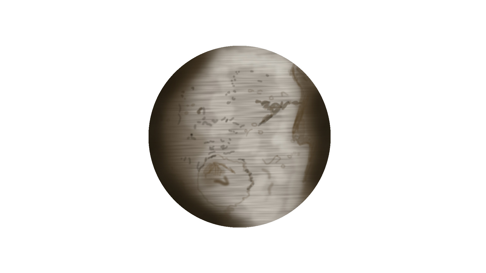

Discover Saturn's Moon, Iapetus!
Iapetus, Saturn's cratered moon, was discovered in 1671 by Giovanni Cassini.
This moon has been referred to the "yin and yang" of moons as the reflectivity of each hemisphere is vastly different from each other, giving a lighter/darker appearance for each side. While we are unsure why this is, we do have our guesses. It has been suggested that Iapetus is attracting bits and pieces from Phoebe (another one of Saturn's moons). Alternatively, there could be volcano-like eruptions spreading darker hydrocarbons onto the surface.
It is the third largest moon of Saturn and is estimated to be 75% ice. It has an orbital period of 79 days and Iapetus is tidally locked with Saturn, meaning that it's rotation period matches it's orbital period: meaning Iapetus is always facing Saturn with with same face. The same is true for the Earth and our Moon.
Due to the long rotation period, temperature cycles are quite long. This results in sections of materal to warm up significantly more than others and exacerbates the bright and dark areas, pushing each to their extreme.
If you notice my rough illustration of this moon, there is a large, circular crater on it. This has resulted in another nickname for the moon, the "Death Star", in reference to the popular George Lucas film, Star Wars.